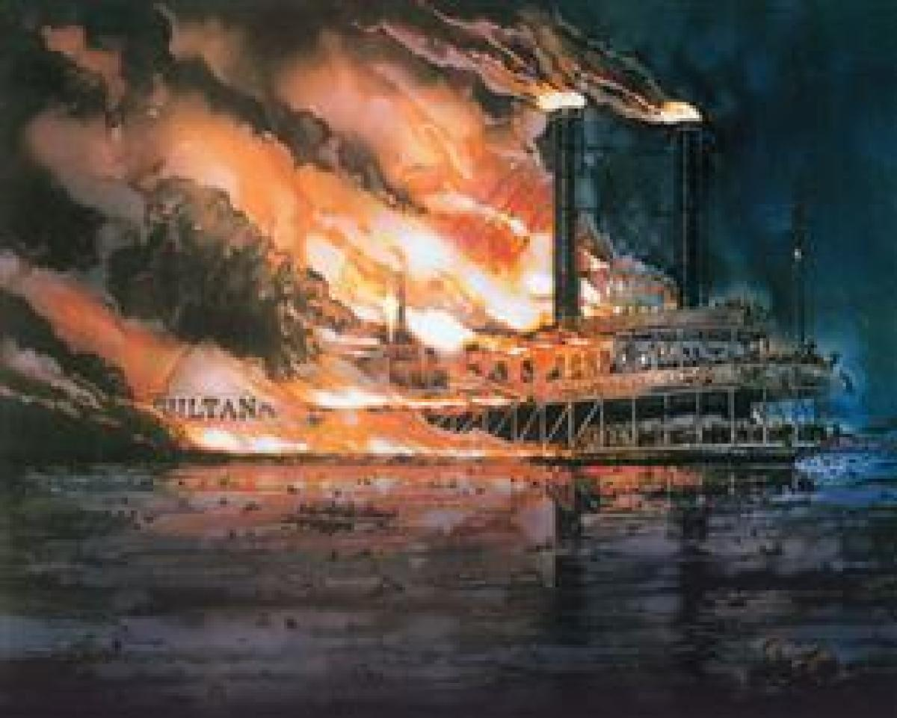

THE SULTANA STEAMBOAT EXPLOSION
In April 1865, the American Civil War was drawing to a close. Thousands of Union soldiers, recently released from brutal Confederate prisoner-of-war camps like Andersonville and Cahaba, were gathered in Vicksburg, Mississippi, waiting for transport back to the North. The Sultana, a commercial sidewheel steamboat, was contracted by the U.S. government to carry these men home. Although the vessel had a legal carrying capacity of only 376 people, the ship’s captain—motivated by a government payment of $5 per soldier—conspired with corrupt officers to crowd an estimated 2,100 to 2,400 people onto the boat. The decks were so densely packed that the wood reportedly creaked under the weight of the men

The Fatal Patch: Before leaving Vicksburg, a leak was discovered in one of the ship's four boilers. Rather than replacing the damaged plate—which would have taken days and cost the captain his lucrative contract—he ordered a mechanic to perform a hasty, temporary "patch job" using a thinner piece of iron. As the Sultana churned north against the powerful, flooded currents of the Mississippi River, the patched boiler was under immense strain. The ship was also top-heavy due to the overcrowding; as the vessel listed from side to side, water in the boilers would shift, causing some areas to overheat and then flash into high-pressure steam when the water rushed back.
The Midnight Inferno: At approximately 2:00 AM on April 27, 1865, just seven miles north of Memphis, Tennessee, the compromised boiler suddenly exploded. The blast ripped through the center of the ship, instantly destroying the pilothouse and the crowded middle decks. Hundreds of men were killed by the initial explosion or scalded by steam. Within minutes, the shattered remains of the wooden boat caught fire. Thousands of weakened, emaciated soldiers were forced to choose between the flames or the freezing, dark waters of the flooded Mississippi. Because of their physical state and the sheer chaos, most were unable to swim to shore.
Key Facts
Date: April 27, 1865
Location: Mississippi River (near Memphis, Tennessee)
Casualties: Estimated 1,168–1,800 dead
Cause: A catastrophic boiler explosion caused by a faulty, temporary repair and extreme overcrowding, occurring while the ship was struggling against a flooded river current.
The sinking of the Sultana remains the deadliest maritime disaster in United States history, with a death toll estimated between 1,168 and 1,800 people—surpassing even the Titanic. Despite the scale of the tragedy, it received relatively little media attention at the time, as the nation was consumed by the recent assassination of President Abraham Lincoln and the hunt for John Wilkes Booth. The disaster stands as a grim reminder of the lethal intersection of wartime corruption, corporate greed, and the catastrophic failure of mechanical safety standards. It eventually led to much stricter federal oversight regarding boiler inspections and passenger capacity on American waterways.